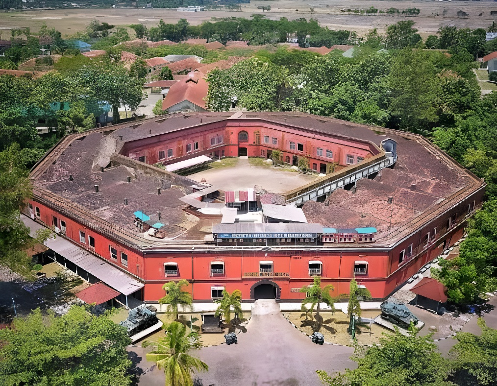
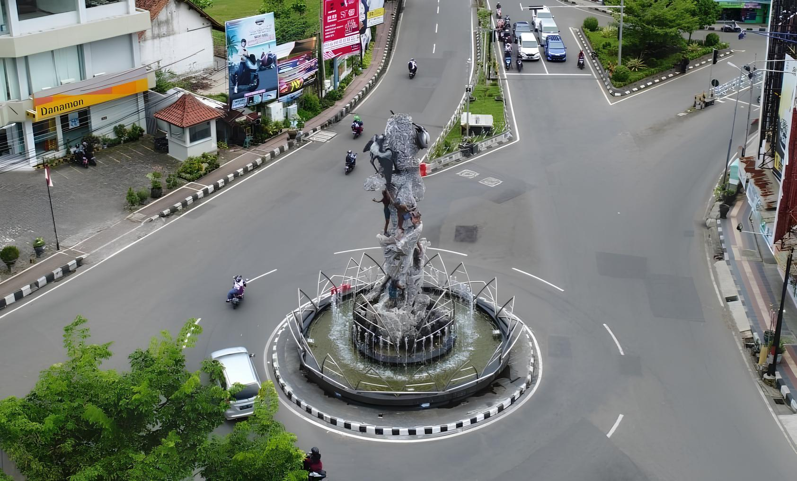
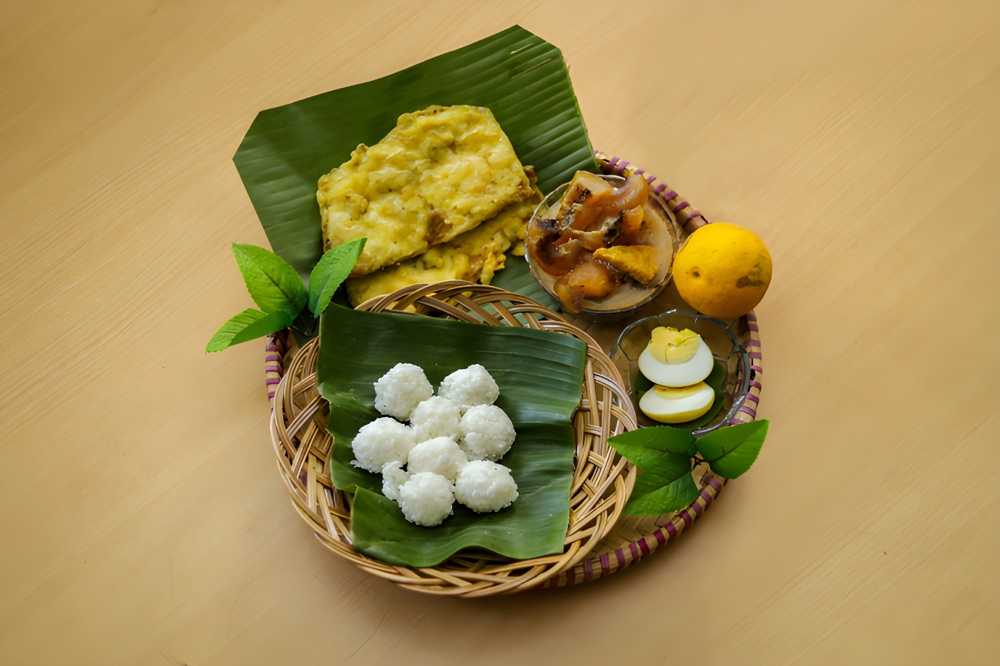
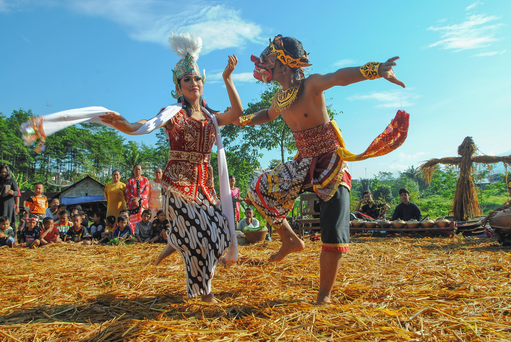

Sejarah
Dari masa Mataram hingga julukan "Bumi Tanduran", simak asal-usul Kebumen.
Menelusuri Jejak Sejarah, Kuliner Khas,
dan Budaya Kebumen
Portal informasi tentang Kabupaten Kebumen, Jawa Tengah.
Julukan "Bumi Tanduran" berasal dari masa Kesultanan Mataram, di mana wilayah Kebumen dijadikan tempat peristirahatan dan penanaman logistik untuk pasukan. Nama "Kebumen" sendiri diyakini berasal dari kata "Ke-Bumi-an".
Jelajahi Sejarah

Sate Ambal dengan bumbu kacangnya yang gurih dan Jenang yang manis legit adalah dua ikon kuliner Kebumen. Jangan lewatkan juga Nangka Gori dan berbagai olahan laut dari pesisir selatan.
Jelajahi KulinerDari kesenian Lengger, tradisi Sadranan, hingga ritual sedekah laut, budaya Kebumen kaya akan nilai-nilai spiritual dan gotong royong yang diwariskan turun-temurun.
Jelajahi Budaya